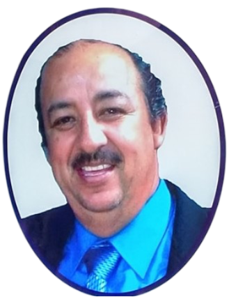
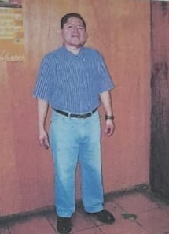
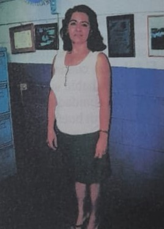

NOMINA DE MAESTRO/AS QUE HAN VENIDO A TRABAJAR A ESTA ESCUELA, SEGÚN ORDEN DE LLEGADA. (Faltan algunos/as)
Antes de Oficializar: |
| Nombre | Fecha |
| 1) Ricardo Pérez Luna | 1990 |
| |
| 2) Mauricio Navarrete | 1990 |
| 3) Reina Elizabeth Alfaro | 1990 |
| 4) Scherly Najarro | 1990 |
| 5) Reyna Hernández | 1990 |
| 6) Gladis Méndez de Cañas | 1991 |
| 7) Benjamin González | 1991 |
| 8) Prof. Panameño | 1991 |
| |
| Desde la oficialización |
| 9) Delmy de los Angeles Bolaños | 11-03-92 (1° Director) |
| 10) Estanislao Evelio Mina | 15-05-92) (1° SubDirector) |
| 11) Maritza Elizabeth Sánchez | 15-05-92 (Activa) |
| 12) Manuel de Jesús Tévez | 28-02-93 (Activo) (2° Director) |
| 13) Celina Esmeralda Zaldivar | 1-03-93 (Activa) |
| 14) Jesús Evelia Calderon | 1-03-93 (Jubilada) |
| 15) Blanca Elizabeth Rivas | 8-03-93 (Activa) |
| 16) Ana Elizabeth Menjivar | 23-03-93 (Activa) |
| 17) Daysi Concepción Molina | 24-03-93 |
| 18) Marta de Jesús Velásquez | 24-03-93 (Activa) |
| 19) Gloria del Carmen Navas | 1-04-93 (Activa) |
| 20) Angela Guillerma Barahona | 1-04-93 |
| 21) Maria Elena Pacheco | 19-05-93 (Activa) |
| 22) José Roberto Alegría Monterrosa | 16-07-93 (2° Subdirector) |
| 23) Frince Maravilla Lozano | 11-04-94 |
| 24) Jorge Alberto Galán | 11-04-94 (Activo) |
| 25) Camilo William Gutiérrez | 23-05-94 (Activo) (4°Subdirector) |
| 26) Iván Alexander Burgos | 1-06-94 (Activo) (3°Subdirector) |
| |
| 27) Ana Marina Jaco de Lobo | 7-01-95 |
| 28) Elsy Magdalena Figueroa | 7-01-95 |
| 29) Ricardo Pérez Luna | 2-05-95 (Activo) (Con plaza oficial) |
| 30) Nohemy Lizarda Torres | 22-05-95 |
| 31) Ada Beatriz Henriquez | 2-06-95 (Activa) |
| |
"Biografía" del Profesor Iván Alexander Burgos Fuentes
1. DATOS PERSONALES

Iván Alexander Burgos Fuentes nació en la ciudad de San Salvador el 25 de agosto de 1967, en el hogar de sus padres Carlos Antonio Burgos Vásquez y Emilia Fuentes Villacorta. Falleció el 22 de diciembre del año 2017, a la edad de cincuenta años.
| Su identificación personal y profesional se recoge en los siguientes documentos: |
| No. de DUI: | 01740071-6 |
| No. de NIT: | 0614-250867-5 |
| No. De N.U.P. | 247071580005 |
| No. De N.I.P. | 0201683 |
1. ESTUDIOS
Educación primaria (1º a 6º ) en el Colegio Nazaret
Completó sus estudios de tercer ciclo en el Centro Educativo “Vicente Acosta” de
la ciudad de Apopa (1975-1982).
Sus estudios de Educación Media, Bachillerato Académico, opción Ciencias Naturales,
los realizó en el Instituto Nacional “General Francisco Menéndez”, INFRAMEN. (1984-
1986).
El siguiente año inició sus estudios de Educación Superior no universitaria, en el Instituto
Tecnológico Centroamericano, ITCA. Obtuvo su título de Profesor de Educación Básica
para I y II ciclos. (1987-1988). Además, el Departamento de Pedagogía de este Instituto
acreditó que completó satisfactoriamente el área opcional de Educación Especial.
Continuó estudios de Educación Superior en la Universidad Pedagógica de El Salvador, UPES, donde se graduó de Profesor de Educación Media en la Especialidad de Biología y Química. (1989-1992)
Luego continuó en la misma universidad, UPES, estudios en la carrera de Licenciatura de Ciencias de la Educación, opción Biología. Egresó en 1996.
2. CURSOS Y SEMINARIOS
Entre los cursos y seminarios a los que asistió el profesor Iván Alexander Burgos se mencionan los siguientes:
* Capacitación de Primeros Auxilios impartido por Comandos de v Salvamento. 1986.
* Curso de Educación Vial impartido POR CONESVI. 1986.
* Curso Básico de Economía de Ex empresarios Juveniles de El Salvador.
1987.
* Curso sobre Utilización de Libros de PLANA LIBRE. 1987.
* Plan de Información de docentes de Educación Especial. 1987-1988.
* Capacitación para Alfabetización y Educ. de Adultos. MINED. 1988.
* Capacitación sobre Educación Especial. ITCA. 1989
* Seminario sobre Laboratorio de Química y Bilogía. UPES. 1991
* Curso sobre la Conservación de las Aves de El Salvador. Brigada Aurora
. 1991.
* Jornada de Capacitación sobre la Reforma Educativa para Directores y
Subdirectores de Tercer Ciclo, impartido por la UCA. 1996.z
* Capacitación de Directores y Subdirectores sobre Nuevos Programas y
Evaluaciones de Tercer Ciclo. MINED. 1996.
* Capacitación para Maestros de Ciencia Salad y Medio Ambiente, UCA, 1997
* Capacitación sobre Planificación Escolar. MINED. 1998.
* Capacitación sobre Correlación de Objetivos. MINED, 1999.
* Curso sobre Salud Mental impartido por el Fondo de Protección de
Lisiados y Discapacitados del Conflicto Armado. 1999.
● Taller sobre estrategias para el desarrollo de Escuela de Padres, constructivismo en el Aula y Detección y atención a Problemas de Aprendizaje. Universidad Evangelina de El Salvador. 2001
● Dos cursos: 1. Disciplina en el Aula, y 2. Técnicas Modernas de Enseñanza-aprendizaje. MINED. 2002.
● Dos jornadas sobre: 1. Programa de Orientación Vocacional, primera parte, 2. Programa de Orientación Vocacional, segunda parte. MINED. 2003.
● Curso sobre Métodos y Técnicas de Enseñanza, impartido por SPC. 2003.
● Curso sobre Comprensión Lectora y Análisis Literario, IPC, 2003.
● Curso sobre Implementación de los Ejes Transversales, por el Centro de Desarrollo Profesional de la Región Central. 2003.
● Capacitación sobre Orientación vocacional y profesional. Mined. 2003.
● Taller sobre “La educación: Una herramienta para combatir el trabajo Infantil en la Industria pirotécnica de el Salvador” OIT/Fe y Alegría. 2013
● Curso sobre Técnicas y Estrategias para el Trabajo en el Aula, impartido por OIT-IPEC. 2004.
3. EXPERIENCIA LABORAL
● Se desempeñó como profesor de 1º. y 4º. grados en la Escuela Rural Mixta del cantón Tierra Blanca, Zacatecoluca. 1989.
● En el Liceo Cristiano Apóstol San Pedro de la ciudad de Quezaltepeque trabajó en el Tercer Ciclo y como Subdirector. 1990-1991.sica
● En la jornada vespertina trabajó en el Tercer Ciclo del Colegio Miralvalle, San Salvador. 1991.
● En el Centro Escolar Lafayete, San Salvador, se desempeñó como profesor de Educación Media, de Biología y Química. Jornada matutina. 1992.
● Trabajó como profesor de Tercer Ciclo y Subdirector de la Escuela Rural Mixta del cantón El Zunzal, La Libertad. 1993.
● En el Centro Escolar Lic. Renato Noyola se desempeñó como profesor de diversos grados de Educación Básica y de Bachillerato, lo mismo que como Subdirector, Orientador de tandas a graduarse, contribuyó a consolidar este centro educativo en los aspectos material, académico y espiritual, desde 1994 hasta diciembre de 2017. 24 años en total.
4. APORTE DEL PROFESOR IVAN ALEXANDER BURGOS A LA EDUCACION
Desde 1994, el profesor Iván Alexander Burgos, cuando se incorporó al Centro Escolar Lic. Renato Noyola de Popotlán, ciudad de Apopa, su preocupación fue mantener una óptima relación docente/alumno, para obtener el máximo resultado del proceso de transformación positiva de los alumnos.
Para llegar a ese resultado trabajó siguiendo cuatro ejes de acción:
1. Los lineamientos psicopedagógicos emanados del MINED.
2. La experiencia de su propio crecimiento profesional a través de capacitaciones y estudios formales.
3. Las expectativas de alumnos, docentes, administrativos y de la comunidad de Popotlán.
4. Su creatividad y propio estilo y mística de ser Maestro.
5. Alto espíritu de servicio y colaboración (Entrega total al trabajo y las responsabilidades con la Institución)
Desarrolló su trabajo en forma organizada con planes y micro planes, siendo puntual, creativo y humano. Ayudaba a sus alumnos más allá de las asignaturas, solidarizándose con ellos, buscando solución a sus necesidades cognitivas, materiales, espirituales y emocionales.
El profesor Burgos nunca fue conflictivo, era paciente, tolerante, exigente y motivador con sus alumnos. Siempre los escuchaba, orientaba y ellos le tenían confianza, algunos más que a sus padres.
Después de la guerra civil, muchas comunidades urbanas y rurales del país han soportado, a partir de la década de los años noventa del siglo XX, una crisis de seguridad que ha arrastrado a niños, adolescentes y jóvenes. La comunidad de Popotlán no fue la excepción, y frente a este dramático escenario el profesor Burgos no se desalentó. Afrontó la realidad e identificó a muchos alumnos con problemas, no como problemas, y decidió darles confianza, tratarlos con mucho respeto y los motivó para que expresaran sus dificultades, angustias, carencias, problemas, frustraciones. Su clave era escucharlos con atención, analizar esta información y elaborar una síntesis para una acertada orientación fundamentada en la práctica de los valores dentro y fuera de la escuela. Así logró rescatar a una gran mayoría de alumnos con problemas. Muchos de ellos son empleados, otros trabajan en sus propias microempresas, y algunos siguieron estudios superiores.
Con los docentes de su escuela mantuvo francas relaciones de amistad y compañerismo, compartiendo sus vivencias y experiencias en las actividades en torno a la escuela. Enfatizaba ante ellos que se debía escuchar a los alumnos y a partir de este conocimiento tener bases firmes para orientarlos.
Con relación a la comunidad se mantenía en contacto con los padres de familia, los orientaba cómo ayudar a sus hijos en su formación integral, a veces les ayudaba en problemas emergentes como llevar a parientes a centros hospitalarios, traslado de fallecidos, compra de ataúdes, y en algunos casos proveer ayuda material de sus propios recursos. Siempre fue solidario con los miembros de la comunidad.
El profesor Iván Alexander Burgos fue un Maestro ejemplar, un amigo singular, dejaba de hacer sus cosas personales por ayudar, sin un beneficio más que dar amor a sus semejantes, en torno de la escuela y su comunidad. Su sonrisa nunca lo abandonó, manteniendo firmeza y constancia en su manera de ser y actuar.
En su lecho de enfermo, a través de su teléfono celular recibió cientos de mensajes escritos y orales de sus alumnos y exalumnos, algunos le enviaban canciones creadas por ellos mismos con mensajes de optimismo. Leía y escuchaba todo, y desde allí los felicitaba, les daba ánimo y orientaba para que no descuidaran su formación integral. Y les confirmaba que él no los abandonaría, siempre estaría con ellos, en cualquier estadio de la vida.
COMPLEJO EDUCATIVO “LICENCIADO RENATO NOYOLA”
BREVE RESEÑA HISTÓRICA DEL PROF. IVÁN ALEXANDER BUSGOS EN ESTA ESCUELA
El Profesor Iván, comenzó a trabajar en esta Institución Educativa el 1 de junio de 1994, anteriormente trabaja en la R.M.M. El Zunzal del municipio de la libertad.
Trabajó aquí durante 24 años con 4 meses.
Desde un inicio demostró ser una persona completamente entregada al trabajo, muy creativa, gran orientador de sus estudiantes, un buen consejero de compañeros de trabajo, padres de familia y de más personas que lo buscaban, una persona alegre, optimista y con un alto grado de espíritu y servicio.
🡪El en muchas ocasiones hasta dejaba cualquier otro compromiso……hasta su familia por atender el trabajo de la escuela.
Por eso se ganó el calificativo como el “San Juan Bosco de la Noyola”
Detalle de los grados que atendió y cargos ostentados.
1. El primer año de trabajo aquí (1994) atendió un cuarto grado A y 4 B
2. A partir del año de 1995 Ya solo trabajo en tercer ciclo y Bachillerato en este año atendió las secciones de 8 A y 8 B
3. En 1996 sacó la primera promoción de noveno grado A y B
4. En 1997 sacó la promoción de 9 A y B
5. En 1998 atendió el 9 A Y B
6. En 1999 8 B por la mañana y en la Tarde fue nombrado Subdirector Interino
7. En 2000 9 B y Sub Director
8. En 2001 9 B y Sub Director
9. En 2002 8 B y Sub Director
10. En 2003 9 B y Sub Director
11. En 2004 9 A y B
12. En 2005 9 A y C
13. En 2006 9 A y B
14. En 2007 8 C y D
15. En 2008 9 B y C
16. En 2009 8 B y D
17. En 2010 9 B y D
18. En 2011 9 A y C
19. En 2012 9 B y C
20. En 2013 9 A y C
21. En 2014 9 A y Vuelve a tomar la Subdirección del turno vespertino
22. En 2015 9 A y Subdirector
23. En 2016 9 A y Sub Director
24. En 2017 9 A y Sub Director
EN TOTAL 29 SECCIONES DE NOVENO GRADO Y 9 AÑOS COMO SUB DIRECTOR.
*Para 2018, se tenía previsto que fuera el orientador de la primera promoción de bachilleres de esta institución.
El Prof. Iván tuvo una muerte repentina, no nos esperábamos que se nos adelantara en el camino. En su enfermedad visible solo duró 2 meses + 23 días.
El sigue y seguirá viviendo por siempre en nuestra mente, en nuestro corazón y en nuestros recuerdos
¿Cómo queremos recordar al Prof. Iván?: Como ese hombre sonriente, amable , pacifico, que educó, enseñó mucho y como un gran consejero…
¿Cómo deseamos honrar su memoria
a)-Haciendo las cosas buenas que él nos enseñó, siguiendo sus pasos
b)-Inmortalizarlo nominando a esta Institución con su nombre
LIC. RICARDO PEREZ LUNA

El Licenciado Ricardo Pérez Luna, es el Profesor con más tiempo de trabajar en esta escuela, ya que él comenzó haciendo su servicio social, hayá por 1990. Por lo que se considera como uno de los pioneros fundadores de esta escuela.
El nos narra como fue que vino por primera vez por estos lados.
Recuerdo que estamos ya por terminar nuestros estudios de licenciatura en
Ciencias de la Educación en la Universidad
de El Salvador cuando el Lic. Renato
Noyola quien había sido nuestro catedrático y coordinador nos manifestó que en la comunidad de Popotlán en la ciudad de Apopa, había una necesidad de un buen grupo de alumnos que se había quedado sin matrícula, por lo que se formó un grupo de 5 estudiantes, quienes fuimos asignados a venir a conocer la situación, nos encontramos con una buena cantidad de niños/as y madres de familia quienes mostraban gran interés por que sus hijos estudiaran, fue así como decidimos comenzar a matricular y luego a trabajar.
De los estudiantes que venimos algunos se fueron retirando
paulatinamente, al terminar su servicio social, yo fui el único que me dado la necesidad que había y por la falta de maestros/as en ese tiempo, quedé, llegué a un acuerdo con la comunidad de continuar laborando quiero destacar que esta comunidad siempre ha sido colaboradora, en ese entonces nos daban en calidad de viáticos ¢ 300.00 ($ 35.00) en concepto de viáticos para poderles movilizar hasta aquí.
Cuando la escuela se traslada para este edificio como ya me había encariñado con la comunidad, decidí continuar en las nuevas instalaciones, hasta llegar al 2 de mayo de 1995, cuando con la ayuda del director y de varios compañeros maestros que ya laboraban aquí en la Noyola, me ayudaron a gestionar con el Jefe de Recursos Humanos y desde entonces estoy nombrado oficialmente aquí, ya en total tengo unos 17 años de estar viajando desde Soyapango hasta esta comunidad, yo me siento cómodo aquí, creo que he tenido muy buenas relaciones con todos a pesar de que vengo de lejos, no me he interesado en dejar la escuela por el momento.
PROFA. MARITZA ELIZABETH SANCHEZ DE MONROY

La Srita. Maritza, como es conocida, es maestra de las pioneras, de las que tiene también mayor tiempo de trabajo en esta escuela, ya que ella también tiene casi 16 años de laborar en esta Institución
A continuación nos narra un poco de su historia.
Bien, recuerdo cuando yo fuí nombrada para venir a trabajar en esta Escuela un 15 de mayo de 1992, la primera vez que vine, me costo un poco encontrar el lugar, llegué a la lomita como la conocían preguntando, como no conocía el pasaje de acceso entré por la parte de atrás, me tocó subir por una parte bien empinada, agarrándome de palos y ramas, en primer momento me pareció que la escuela estaba en un lugar bien dificil de llegar.
Cuando me presenté a laborar, me encontré que únicamente habían 2 maestros nombrados, una era la Profa. Delmy Bolaños (quien era la Directora) y el Prof. Ernesto Mina, quien era el Subdirector, habían otros maestros/as los cuales eran pagados por la comunidad, en total éramos en ese momento como unos 8 profesores en ese momento. Los primeros niños que me asignaron eran de primer grado, en la mañana y un cuarto grado en la tarde.
Realmente que cuando comencé a trabajar en esta escuelita, las
condiciones eran super dificiles, el piso era de tierra, la galera era de madera y lámina oscuras, sin mobiliario adecuado, las condiciones eran super, super precarias, horribles.
Realmente me sorprendí bastante, ya que yo venía de trabajar en un colegio un tanto lujoso de Apopa (El Perpetuo Socorro).
La compañera Directora se alegró mucho, con mi llegada, ya que me dijo "ya no estaré sola", por que aquí es un poco peligroso, ya que a veces entraban personas particulares a estar interrumpiendo el trabajo de los profesores, especialmente había una persona que solamente en mi grado quería pasar viéndome, y a mi eso me daba mucho miedo.
No sabe cuanto nos alegramos y nos emocionamos cuando nos enteramos que el proyecto de construcción de la escuela había sido aprobado, mas que todo cuando vimos que ya comenzaron a construir.
Fue por esa razón que un día después de la inauguración de este edificio nos venimos de inmediato a trabajar aquí.
Yo me siento super feliz y satisfecha, porque considero que quien tomó las riendas de esta escuela la ha sabido llevar en un cien por ciento bien,
no se
ha descuidado en nada, al contrario se ha ampliado, la calidad de la educación que aquí brindamos todos los maestros/as es muy buena, las relaciones con la comunidad son excelentes y en todas las áreas se trabaja bien, es por esa razón que por el momento no pienso trasladarme de esta escuela.
Lo que más me satisface es que aquí hemos dejado muy buenas huellas; ya tenemos exalumnos/as que son profesionales, otros tienen buenas formas de ganarse la vida y me alegra mucho cuando los veo y me saludan o me entero de sus logros.
Cuando la historia se escribe el tiempo se detiene
Porque recordar es volver a vivir